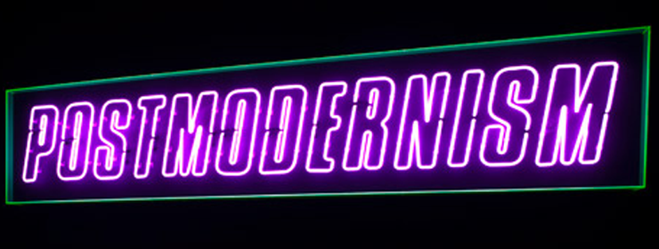

1-9 Class Recap

Ahoy ahoy, it was great to see you all again today and I hope you all had a good break. I didn't get to talk to everyone today, but I'll get around to it.
We started our first class back watching a youtube video that explains postmodernism and what it means to be postmodern.
Nick will often refer to postmodernism in class when talking about writing so it's good to have an understanding of what it actually means.
We then talked a bit about the individual research projects you will all have to do. You will each give an individual research speech (THIS IS DIFFERENT THAN YOUR GROUP SPEECH). The individual speech should be tailored to whatever field you think you might go into. For example, if you were an exercise science major you could give a speech on the benefits of extracted cannabis oil and how it can greatly benefit athletes. (I want someone to do this because I'm curious). I'm a C.S. major so my speech was about the current state of the computer science curriculum in high school and how we need a greater push to increase its importance in the High School atmosphere.
Alongside the individual speech is the group speech. After a short writing exercise where each of you listed things you're interested in, Nick and I split everyone into their groups. These are the groups you will be working with for your group speech. The idea is you pitch us an idea asking for money in an attempt to better the world.
Some topics could include:
- building desalinization plants
- cleaning the world's oceans
- improving recycling initiatives
- anti poaching
- building parks in lower-income urban areas
Obviously, there are more topics than these, this is just a brief list. Feel free to make something up yourself. This is why we watched shark tank in class before. Your speeches will follow the same format (to an extent). Just remember your objective is to make the world a better place.
Homework for Friday:
You should print of a research article for Friday. Any RECENT article regarding a potential topic for your individual speech or your group speech. If you don't know for sure what your topics are yet it's totally fine to bring an article regarding a potential topic. We will discuss how to accurately find research articles as a part of this assignment so don't worry if the article is from a news outlet like Time. That being said, don't bring an article from some sketchy site like bushDidNineEleven.com or something. If you have questions I'm here to help!
Finally, Financial aid refund checks are here, so if you are wondering where to go you can find them at in Gilchrist hall. Go up to the clerks right next to the financial aid office and take your student ID to receive your check.
-- Google maps link for the lost--
There will also be another post soon on the site for the UNI scholarship application. It's pretty straightforward and it's free money so don't sleep on that you guys! I'll hit you with an e-mail once I finish the walkthrough.